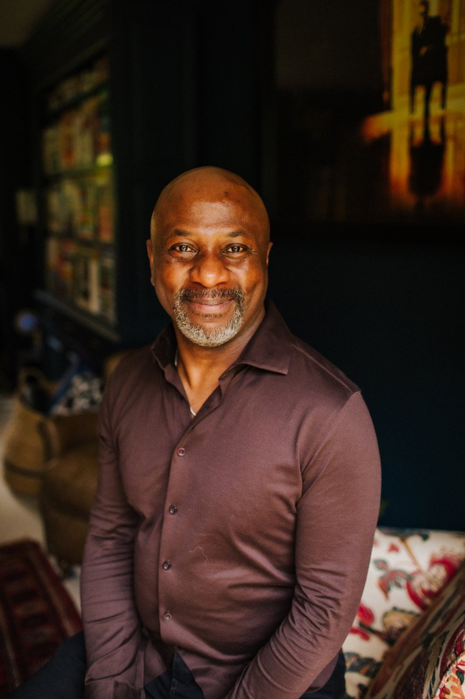
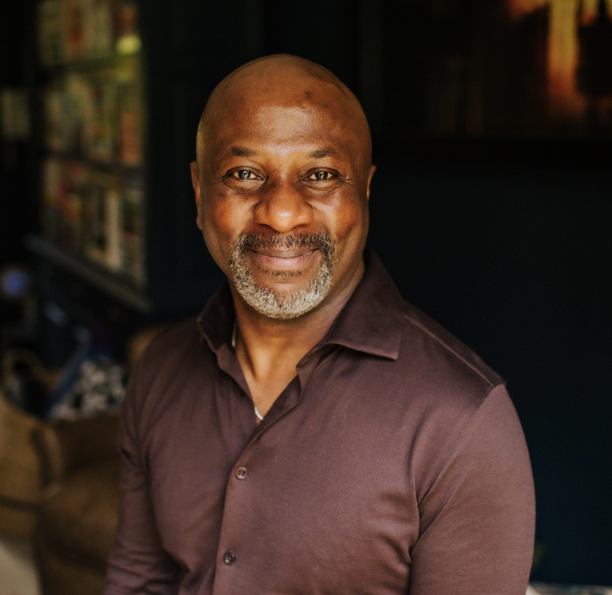
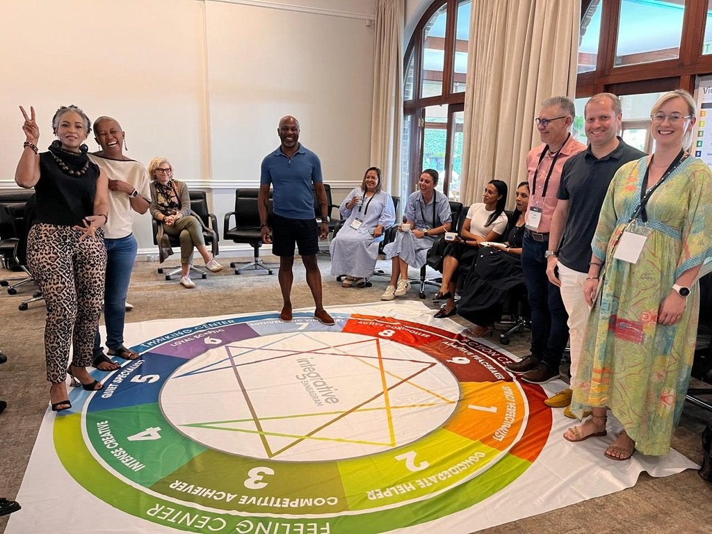
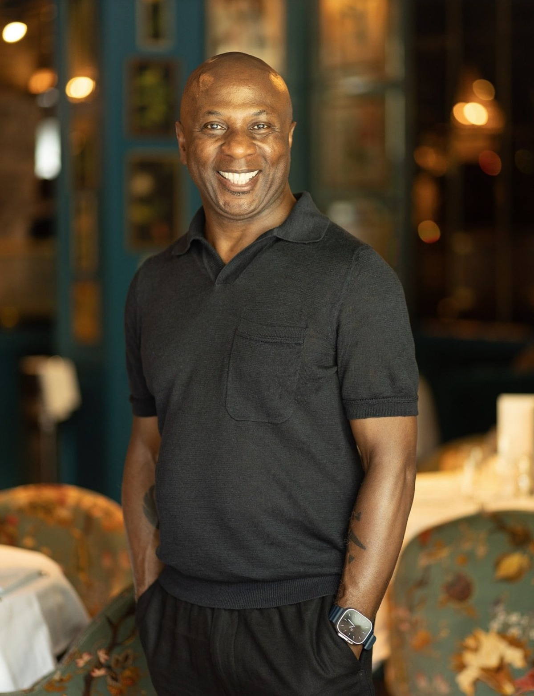
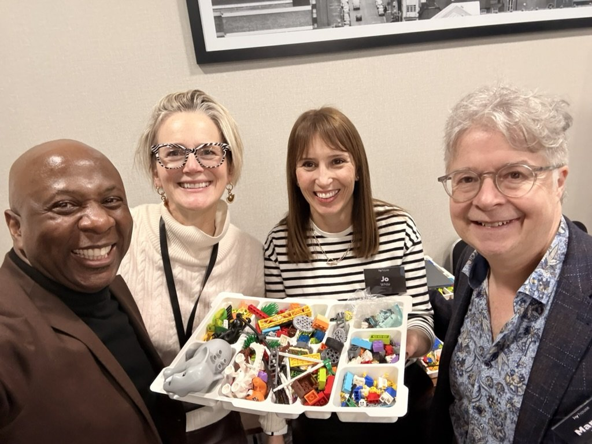
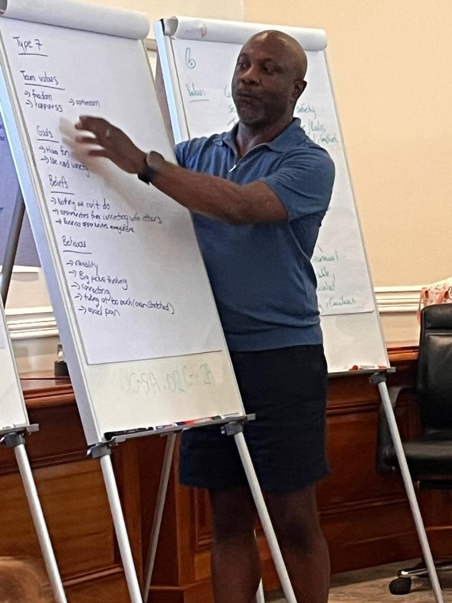
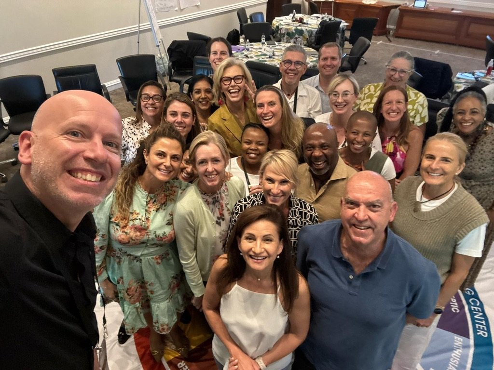
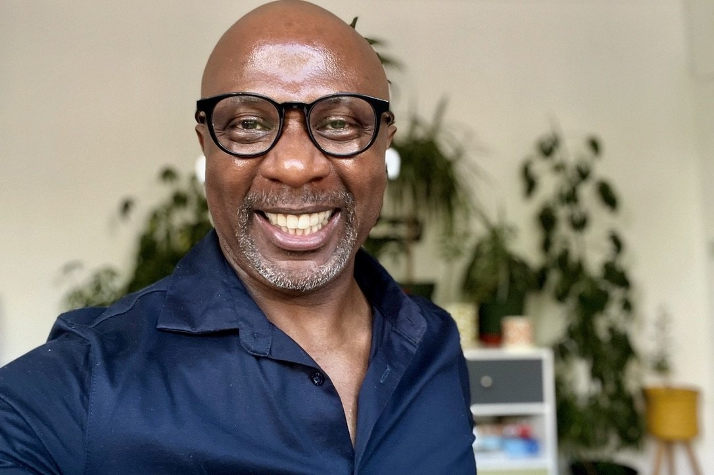

For senior leaders and leadership teams
Leadership gets more complex the higher you go.
I create the space for senior leaders and leadership teams to think differently, see what they couldn't see before, and lead what comes next.
For senior leaders, executive teams and organisations navigating growth, change, complexity and the very human business of leadership.

You don't need another leadership model.
At senior level, the challenge is rarely a lack of knowledge. You probably already know how to lead a meeting, set a strategy, manage performance and make decisions. The harder questions are often different.
What happens to you when the pressure rises?
How are you experienced by the people around you?
What patterns are shaping your decisions without you noticing?
What conversations are you avoiding?
What does this organisation or team need from you now, rather than the leader you learned to be five years ago?
And sometimes: who are you becoming as a leader?
That's where my work tends to begin.
How I work
I work with people at the point where leadership becomes personal.
For more than two decades, I have worked with leaders, teams and organisations through coaching, leadership development, facilitation and transformational learning. My work spans emerging senior talent through to directors, executives and C-suite leaders.
I've coached individuals through significant transitions, facilitated rooms of senior leaders, developed leadership programmes, trained coaches and facilitators, supported leadership teams and helped organisations create conversations that would otherwise be difficult to have. Today my work sits primarily across four areas.
01 · Individual
Executive Coaching

A confidential thinking partnership for senior leaders operating with pressure, visibility and complexity. The work might begin with executive presence, influence, confidence, transition, relationships, performance or a particular organisational challenge. But we rarely stay on the surface.
Together we explore the decisions in front of you, the system around you, the stories you are carrying and the patterns shaping how you lead. The objective isn't simply insight.
It's helping you become more deliberate about who you are, how you show up and what happens because you are there.
02 · The room
Leadership Facilitation & Workshops
Sometimes the work isn't with one person. It's with the room.
This is where twenty years of coaching meets a lifetime fascination with performance, communication and human behaviour. I originally trained in acting and physical theatre before moving into education, training, coaching and organisational development. That background still matters.
I understand something about rooms. Energy. Attention. Story. Silence. Participation. Safety. Challenge. Timing. And the moment when a group stops attending a workshop and starts having a conversation that actually matters.
I design and facilitate leadership experiences ranging from intimate executive team sessions to large leadership programmes and masterclasses. My job isn't to stand at the front and deliver content at people. It is to create the conditions in which people think, participate, challenge themselves, experiment and leave seeing something differently.
Programmes can be standalone interventions or form part of a wider leadership development journey.
03 · What sits underneath
Enneagram for Leaders & Teams
The Enneagram provides something many personality tools don't. It doesn't simply describe what you do. It begins to illuminate why you do it. Used well, it gives leaders a sophisticated lens through which to understand motivation, communication, conflict, decision making, stress and the patterns they bring into relationships.
Individual Enneagram
Using the iEQ9 professional assessment, we create a detailed picture of your patterns, motivations, strengths, blind spots and leadership tendencies. The report isn't the destination. It's the beginning of the conversation.
- What happens to me under pressure?
- What am I protecting?
- Where does my strength become overused?
- What might other people experience from me that I don't see?
- What becomes possible when I have more choice?
Team Enneagram
With teams, the work becomes even more interesting. Individual profiles combine to reveal the patterns of the collective. We can begin to see how different people communicate, where conflict originates and what the team instinctively pays attention to.
- Who needs time to think, and who thinks aloud
- What it routinely misses
- How it behaves under pressure
- Where particular voices dominate
- Where its strengths may also be its blind spots

The result isn't nine people wearing personality labels. It's a team with a richer language for understanding itself, and considerably more choice about how it works together.
A working principle
The person behind the leader matters.
You don't leave yourself at the office door.
The leader making the strategic decision is also a human being carrying history, ambition, relationships, assumptions, hopes, fears and stories about who they need to be. So I am interested in both. The organisational challenge. And the human being experiencing it.
My work draws from narrative coaching, the Enneagram, systems thinking, Physical Intelligence, coaching psychology and more than twenty years of working with people and groups. I am interested in the stories we inhabit. The roles we unconsciously accept. The systems we become part of. The patterns we repeat. And the possibility that sometimes a very small shift in perspective changes everything that follows.
“I'd never thought about it like that before.”
Clients often describe moments when something suddenly becomes visible. Those are the moments I work for. Because once something can be seen, we have choices about what happens next.

Track record
Experience that reaches beyond the coaching room.
ICF Professional Certified Coach (PCC)
Managing Partner, Zenith Leadership
I have spent more than two decades coaching, training and facilitating. My professional journey has included senior roles within Animas Centre for Coaching, including Centre Director, alongside work as a senior coach, facilitator and associate with organisations including Ivy House London, More Happi, Jenny Bird Executive Coaching, Elev-8 Performance and the Physical Intelligence Institute.
I've worked with new leaders finding their voice, experienced executives carrying significant organisational responsibility, leadership teams trying to work differently and organisations navigating change. Different rooms. Different challenges.
The same underlying question: what does leadership require of us now?



Direct client work
Delivered as an associate, with programmes connected to
What people experience
“
Robert's coaching style, listening skills and curiosity took me to a new personal level. To understand how focussing on me and my personal goals would help me in my professional life was life changing.
Alexis WardHead of Adviser Experience, Scottish Widows
“
Robert has an engaging and inspirational personality that is key to catalyzing leadership growth. He motivates those around him to set their sights higher and achieve more.
Matthew PaineGlobal Training Specialist, Siemens
“
I have been very fortunate to have had the privilege to listen to international sporting coaches, garnishing their tips, seeking their point of difference and edge. Robert Stephenson is right up there with them all. I have rarely seen connection and delivery like it.
Graeme YoungHead of People Service Delivery, Heathrow
“
Over the past 12 months Rob and Will have been hugely influential in my business, both strategically and operationally, and I can't recommend them highly enough.
Duncan CormackCEO, Cormack Advertising
Radical support, meaningful challenge
I don't believe great coaching means endlessly asking questions while carefully avoiding having a point of view.
Because insight is interesting. Change is what you do with it.
People think better when there is trust. People take risks when they feel safe enough to do so. And people often discover more when there is curiosity, humanity and a little humour in the room.
Ways of working
There are several ways we can work together.
Executive Coaching
One-to-one partnerships with senior leaders and executives.
Leadership Team Development
Working with leadership teams around relationships, alignment, behaviour and performance.
Enneagram for Leaders
Individual iEQ9 profiling combined with executive coaching.
Enneagram for Teams
Individual profiles, one-to-one debriefs, team mapping and facilitated team development.
Leadership Workshops & Masterclasses
High-impact sessions designed around the particular challenges facing your organisation.
Leadership Programmes
Multi-session development journeys combining facilitation, coaching, experimentation and reflection.
Speaking & Keynotes
Provocative, engaging conversations about leadership, change, narrative, identity and what it means to lead human beings.
Perhaps you're at a threshold
A bigger role. A changing organisation.
A team that needs something different.
A difficult decision.
Or perhaps nothing is obviously wrong. You simply know there is another level of leadership available to you.
We can start there. No performance. No need to arrive with the answer. Just a conversation about where you are, what is happening and what might become possible.

Managing Partner, Zenith Leadership